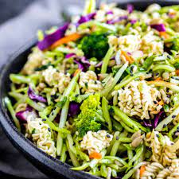

Crunchy-Ramen-Broccoli-Slaw

Description
This broccoli slaw recipe was passed around for years in my grandmother's beauty salon. She took it to every church supper.
It was on the table every Thanksgiving and Christmas.
Ingredients
¼ cup butter
2 (3 ounce) packages Oriental-flavor ramen noodle soup, seasoning packet reserved
½ cup slivered almonds
¼ cup sesame seeds
1 (16 ounce) package broccoli coleslaw mix
½ cup chopped green onion
Dressing
½ cup salad oil
½ cup white sugar
¼ cup apple cider vinegar
2 tablespoons soy sauce
Directions
Step 1
Preheat the oven to 350 degrees F (175 degrees C).
Step 2
Melt butter in a microwave-safe bowl in the microwave. Crush
ramen noodles into small pieces; stir crushed noodles, almonds, and sesame seeds
into melted butter. Spread mixture onto a baking sheet.
Step 3
Bake in the preheated oven until golden brown and crunchy, 8 to 10 minutes; allow to cool completely.
step 4
Toss together coleslaw mix and green onion in a large serving bowl.
step 5
Make dressing: Whisk together oil, sugar, vinegar, soy sauce, and reserved seasoning packets in a separate bowl until well combined.
step 6
Stir cooled noodle mixture into dressing. Pour dressing over coleslaw-onion mixture; toss to coat.